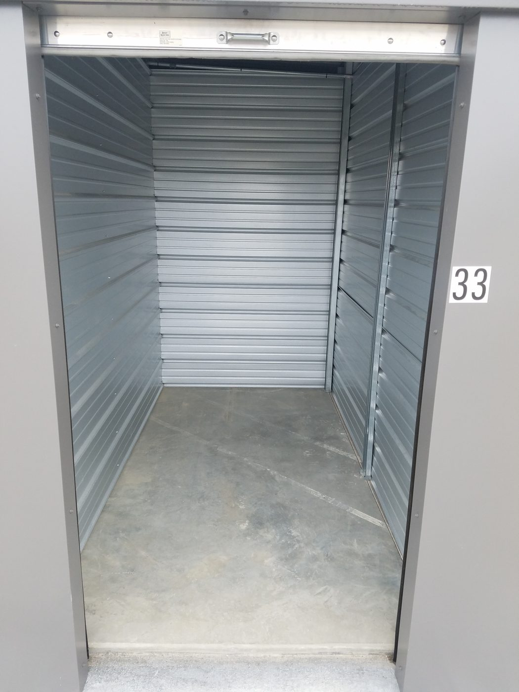
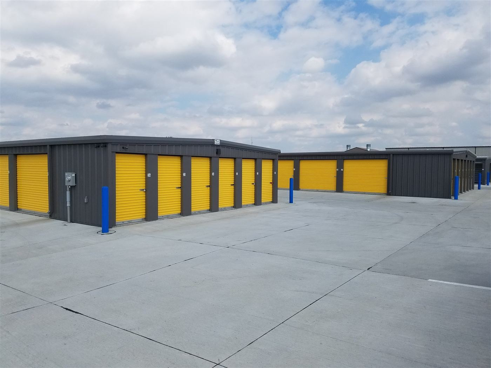
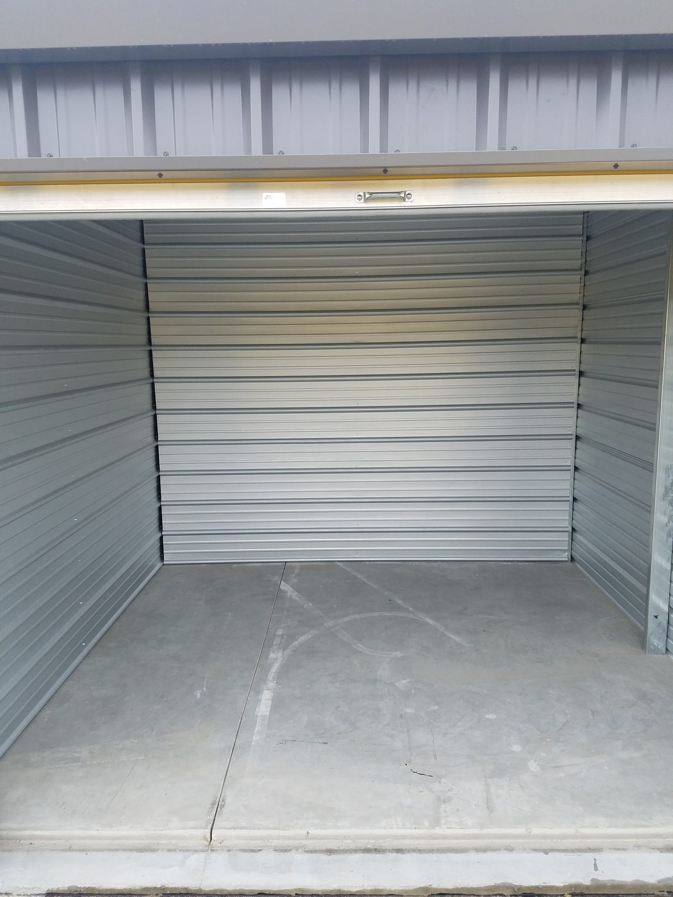
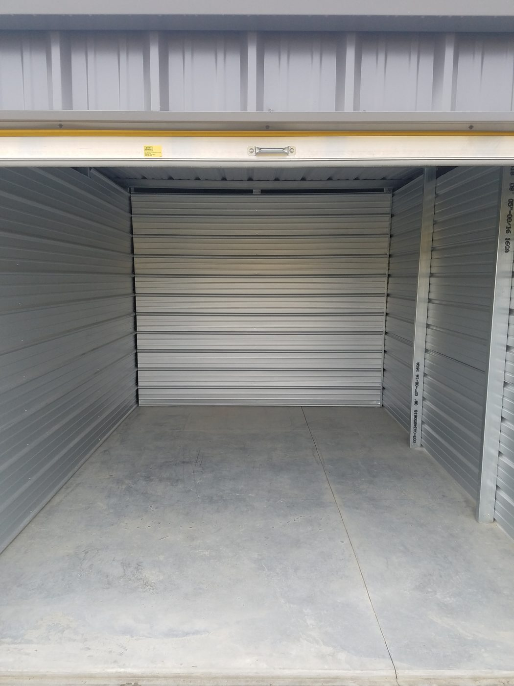
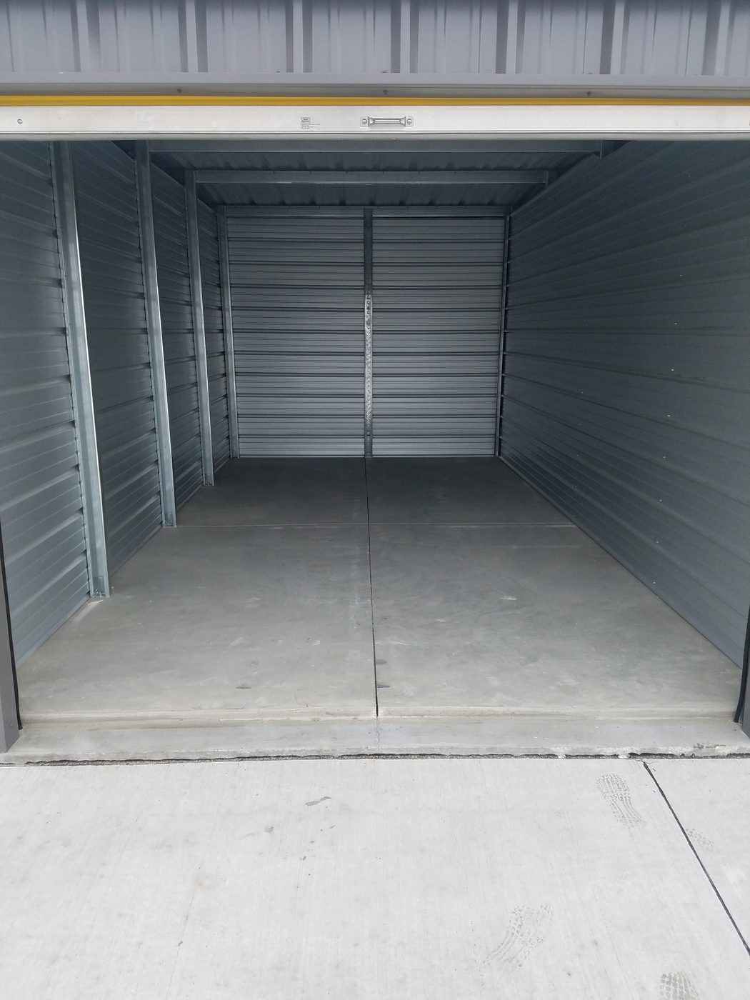
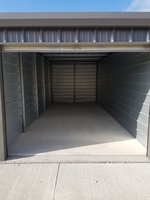
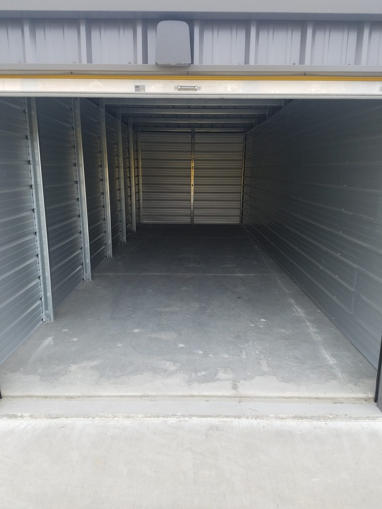
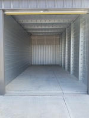

5 x 10 storage unit
It fits furnishings of a mid-sized bedroom, including a queen-sized bed, a dresser, a TV and several small to medium-sized boxes.

Dan owns this lot on Commerce Drive. He is the only person you will talk to.
“Last minute I needed a storage unit.. this place has AWESOME hours, affordable, GREAT sizes to choose from, it was super convenient to pay, it was 24 hour access, I felt extremely safe leaving my valuables there with all the security.”
“Seamless, easy, clean, affordable, personable, and a reasonable process to secure a unit. Dan helped me a short term space between apartments and it couldn’t have been easier.”
“As a college student needing a storage unit for the summer months every year, I know the challenge it can be to find a storage unit for the summer. V's made it easy to rent a unit online and Dan was very helpful and available anytime.”
Household storage at 2800 Commerce Drive, Iowa City, IA 52240. Dan has run this lot for 10 years, and you talk to him, not a call center. RV, boat, and trailer storage is at the west lot on IWV Road.
You can rent a unit online. Choose a size, then finish on the rental page.

It fits furnishings of a mid-sized bedroom, including a queen-sized bed, a dresser, a TV and several small to medium-sized boxes.

It fits the contents of an entire family room or two full bedrooms, including several small to medium-sized boxes.

It fits the contents of three full bedrooms and larger items such as a piano, couches, tables, or large-screen TVs, plus several medium to large-sized boxes.

It fits the contents of a multi-bedroom house, including several oversized items like a couch, a refrigerator, a washer/dryer and a dining room set or several large boxes.

It fits the contents of a multi-bedroom house, including several oversized items like a couch, a refrigerator, a washer/dryer and a dining room set or several large boxes.

It fits the contents of a multi-bedroom house, including several oversized items like a couch, a refrigerator, a washer/dryer and a dining room set or several large boxes.

It fits the contents of a very large house. Can fit all cars, most truck, small trailers, campers, and boats. Would also be the ideal space for a contractor. Door height is 10'.
V's Self Storage is at 2800 Commerce Drive, Iowa City, IA 52240. Dan has run this lot for 10 years. Call or text him at (319) 333-4845.
Dan, the owner. He is the only person you will talk to. There is no call center.
Yes. Choose a size on this page, then finish on the rental page. Units start at $70 a month.